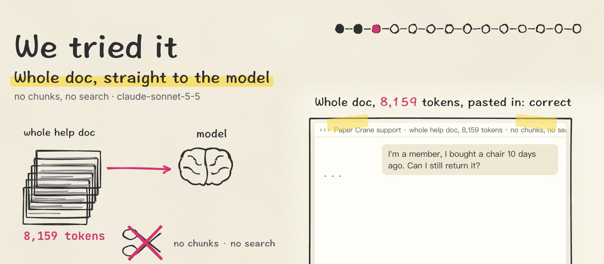

Research
Startups I've researched, and AI terms I've explained on film.
Startups 2
Written with my Startup Research method. The same research can also be published as a video.
AI Term Explainer 6
One AI word per film, in plain language. Watch on YouTube. How they’re made: AI Term Explainer.
 Ep 6 · 5:36MCPOne plug for every AI.
Ep 6 · 5:36MCPOne plug for every AI. Ep 5 · 17:43Tool useHow AI goes from talking to doing.
Ep 5 · 17:43Tool useHow AI goes from talking to doing.
Ep 4 · 13:18Long context vs RAGWhen to skip retrieval and paste the whole thing in. Ep 3 · 16:06RAGAn open-book exam for the AI.
Ep 3 · 16:06RAGAn open-book exam for the AI. Ep 2 · 11:21Vector databaseA warehouse that finds the closest points fast.
Ep 2 · 11:21Vector databaseA warehouse that finds the closest points fast. Ep 1 · 10:30EmbeddingMeaning turned into coordinates.
Ep 1 · 10:30EmbeddingMeaning turned into coordinates.